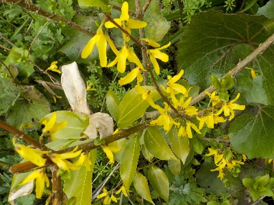
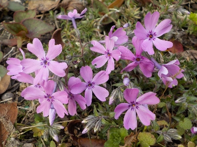
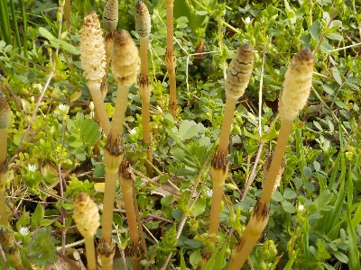
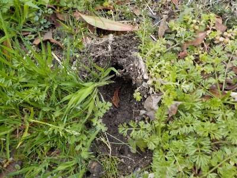
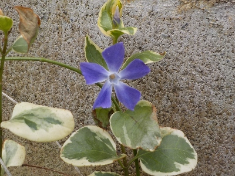
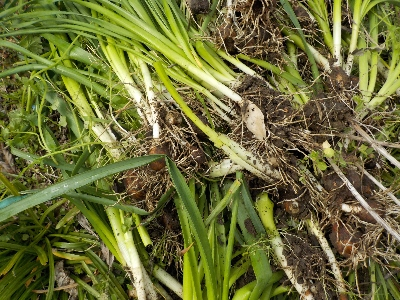

レンギョウって人気がない気がする。
2024/03/30

黄色は派手な色ですが、植物の黄色ってあんまり目立たないです。このレンギョウはいつから咲いていたんだろう？。
2024/03/30

黄色は派手な色ですが、植物の黄色ってあんまり目立たないです。このレンギョウはいつから咲いていたんだろう？。
2024/03/30

鉢植えはまだですが、地植えが先に咲きました。地面は暖かいんですね。
2024/03/17

もうちょちとしたらスギナが出ますね。
なんか憎たらしいので目に付くところのつくしはちぎり取りました。
2024/03/03

なんて動物でしょうね？
イノシシはこのへんにはいないと思うんだけどな。
2024/03/03

以前からツボミがあって、いつ咲くかなと見ていました。
花があるといいですね。ツルニチニチソウって、ちょっとしたスペースに植えるといいと思うんですが、そんなスペースって案外ないです。
2024/03/03

畑で増えすぎた水仙を処分しました。
なんかもったいないですが仕方ないです。
過去の日記
畑仕事じゃないよ。